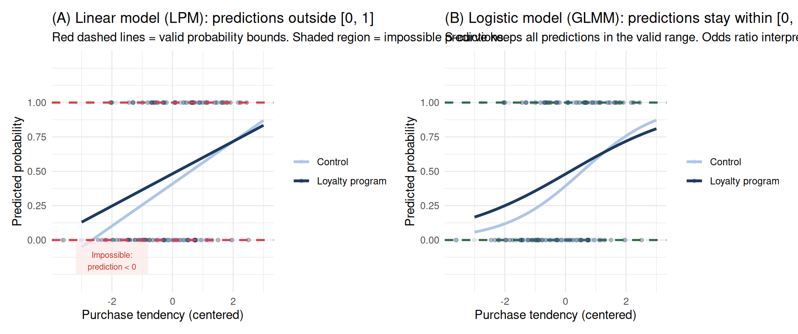
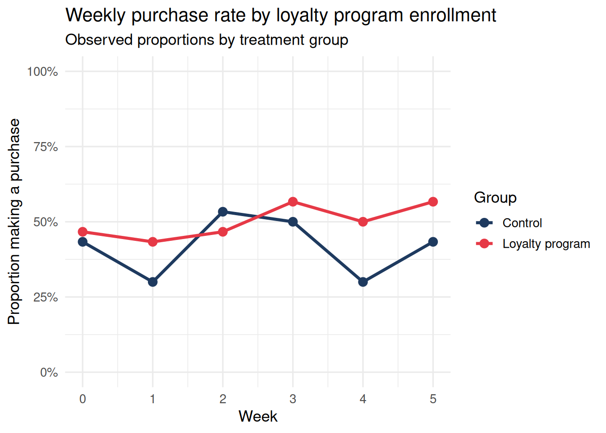
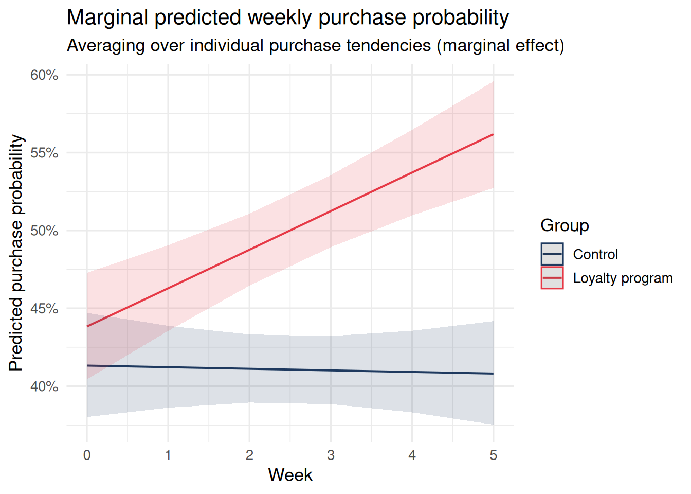
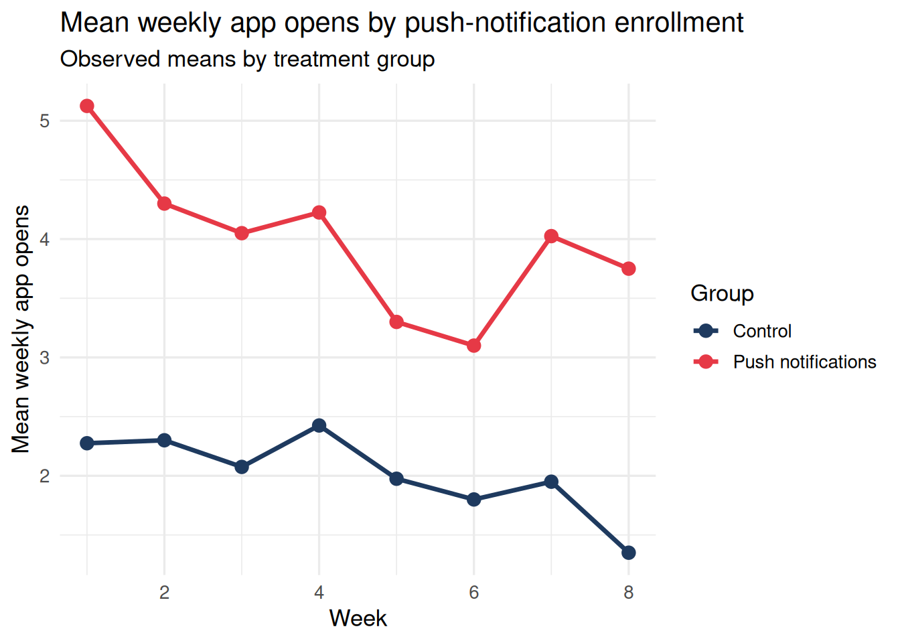
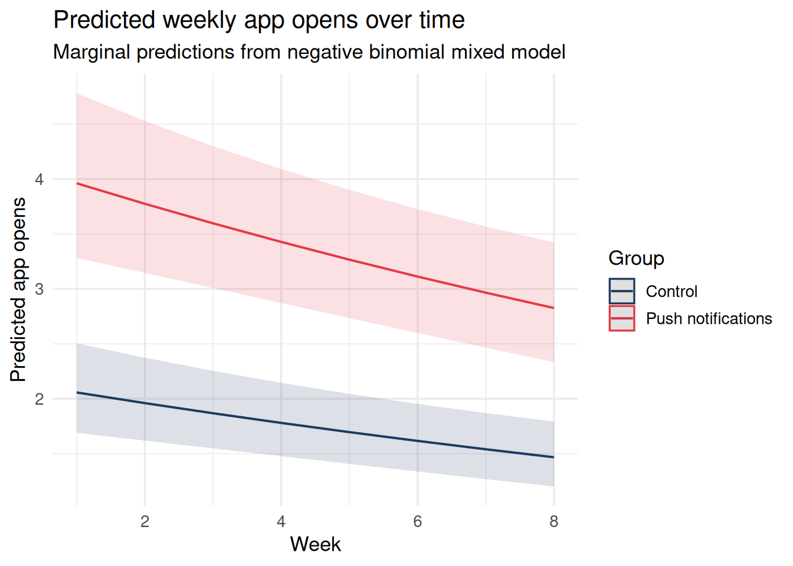

Binary and Count Outcomes Over Time
Binary and Count Outcomes Over Time
When the DGP Does Not Generate Continuous Data
Every model we have used in this module so far assumes something about your outcome: that the true data-generating process (DGP) produces values that, after accounting for predictors and random effects, are normally distributed. That assumption is perfectly reasonable for outcomes like stress scores, reaction times, or cognitive performance — values that can in principle be any real number.
But many longitudinal outcomes in consumer behavior and financial research are not continuous. They are binary — did the customer make a purchase this week? Did they make a late payment this month? Did they adopt the recommended savings allocation? Or they are counts — how many times did a customer open the app this week? How many transactions did they make? How many overdraft events occurred this month?
When the DGP generates binary or count data, a linear mixed model imposes a structure that does not match the outcome’s constraints. Predicted probabilities can fall outside [0, 1]. Residuals cannot be normally distributed. For probability and rate interpretation — or any inference that depends on the correct scale — an LMM is the wrong tool. (LMMs can sometimes approximate mean-structure questions in balanced designs, but for constrained predictions and proper uncertainty quantification a GLMM is the appropriate primary model.)
Generalized Linear Mixed Models (GLMMs) extend the mixed model framework to non-normal outcomes. They combine:
- A random effects structure (exactly as in
lmer) to handle nesting and repeated measures - A link function that transforms the linear predictor to the appropriate scale
- A distributional family that matches the DGP
The longitudinal setting makes GLMMs especially important, because tracking people over time almost guarantees you will encounter binary events and count outcomes alongside the usual continuous measures.
Why Not Just Use a Linear Mixed Model?
The chart below shows what happens when you fit a linear mixed model to a binary outcome versus a logistic mixed model. Both models are fit to the same data: 60 customers, binary purchase outcome, one predictor (loyalty program × baseline purchase tendency). The problem is immediate: the linear model produces predicted probabilities below 0 for customers with low baseline purchase tendency, and potentially above 1 for customers with high tendency and program membership. These are impossible predicted probabilities — and they make confidence intervals and counterfactual predictions meaningless.
The linear model is sometimes used as a “linear probability model” in economics — it gives approximately correct marginal effects near the center of the distribution. But in longitudinal research with repeated measures, the out-of-bounds predictions propagate through the random effects structure, distorting the variance partitioning and making ICC and \(\tau^2\) estimates meaningless. The logistic GLMM is the correct choice whenever the outcome is binary.
Part 1: Binary Longitudinal Outcomes — The Logistic Mixed Model
The Model
For a binary outcome \(Y_{ij} \in \{0, 1\}\) measured at occasion \(i\) for person \(j\), the logistic mixed model is:
\[\text{logit}\bigl(P(Y_{ij} = 1)\bigr) = \underbrace{\beta_0}_{\substack{\text{average log-odds} \\ \text{at baseline}}} + \underbrace{u_{0j}}_{\substack{\text{person's deviation} \\ \text{from average}}} + \underbrace{\beta_1 \cdot \text{week}_{ij}}_{\substack{\text{change in log-odds} \\ \text{per week}}} + \underbrace{\beta_2 \cdot \text{treatment}_j}_{\substack{\text{treatment effect} \\ \text{on log-odds scale}}}\]
where:
- \(\text{logit}(p) = \log\frac{p}{1-p}\) is the log-odds of the event
- \(u_{0j} \sim \mathcal{N}(0, \tau^2)\) is a person-level random intercept — capturing the fact that some people are generally more likely to have an episode, regardless of treatment or time
- The fixed effects \(\beta_1\) and \(\beta_2\) operate on the log-odds scale, so we exponentiate them to get odds ratios
This is exactly the linear mixed model, but with a logit link function wrapping the left-hand side.
Simulating a Longitudinal Loyalty Experiment
We simulate 60 customers tracked over 6 weeks. Half are randomly enrolled in a loyalty reward program. The outcome is binary: whether the customer made at least one purchase that week. The loyalty program is expected to roughly double the weekly purchase odds.
Code
n_people <- 60
n_weeks <- 6
treatment <- rep(c(0, 1), each = n_people / 2)
# Person-level random intercepts (on log-odds scale) — some customers are
# habitual shoppers, others rarely purchase regardless of program
u0 <- rnorm(n_people, 0, 0.8)
df_binary <- expand_grid(
person = 1:n_people,
week = 0:(n_weeks - 1)
) |>
mutate(
treatment = treatment[person],
u0 = u0[person],
# True log-odds: intercept + loyalty program effect + habituation over time + RE
log_odds = -0.5 + u0 + 0.7 * treatment - 0.05 * week,
prob = plogis(log_odds),
purchased = rbinom(n(), 1, prob),
person = factor(person),
treatment = factor(treatment, labels = c("Control", "Loyalty program"))
)
# Observed purchase rates by week and treatment group
df_binary |>
group_by(week, treatment) |>
summarise(prop_purchase = mean(purchased), .groups = "drop") |>
ggplot(aes(x = week, y = prop_purchase, color = treatment, group = treatment)) +
geom_line(linewidth = 1.2) +
geom_point(size = 3) +
scale_color_manual(values = c("#1e3a5f", "#e63946")) +
scale_y_continuous(limits = c(0, 1), labels = scales::percent_format()) +
labs(
title = "Weekly purchase rate by loyalty program enrollment",
subtitle = "Observed proportions by treatment group",
x = "Week", y = "Proportion making a purchase", color = "Group"
) +
theme_minimal(base_size = 13)
Fitting the Logistic Mixed Model
Code
m_binary <- glmer(
purchased ~ week * treatment + (1 | person),
data = df_binary,
family = binomial
)
summary(m_binary)Generalized linear mixed model fit by maximum likelihood (Laplace
Approximation) [glmerMod]
Family: binomial ( logit )
Formula: purchased ~ week * treatment + (1 | person)
Data: df_binary
AIC BIC logLik -2*log(L) df.resid
498.8 518.2 -244.4 488.8 355
Scaled residuals:
Min 1Q Median 3Q Max
-1.4114 -0.8399 -0.7064 1.0067 1.4186
Random effects:
Groups Name Variance Std.Dev.
person (Intercept) 0.3257 0.5707
Number of obs: 360, groups: person, 60
Fixed effects:
Estimate Std. Error z value Pr(>|z|)
(Intercept) -0.350720 0.297114 -1.180 0.238
week -0.004228 0.091833 -0.046 0.963
treatmentLoyalty program 0.102629 0.418558 0.245 0.806
week:treatmentLoyalty program 0.103531 0.129537 0.799 0.424
Correlation of Fixed Effects:
(Intr) week trtmLp
week -0.772
trtmntLyltp -0.709 0.548
wk:trtmntLp 0.546 -0.709 -0.772Reading the Output
Fixed effects come out on the log-odds scale. To interpret them as odds ratios, exponentiate:
Code
broom.mixed::tidy(m_binary, effects = "fixed", exponentiate = TRUE, conf.int = TRUE) |>
select(term, estimate, conf.low, conf.high, p.value) |>
knitr::kable(digits = 3,
caption = "Fixed effects as odds ratios: loyalty program increases purchase odds")| term | estimate | conf.low | conf.high | p.value |
|---|---|---|---|---|
| (Intercept) | 0.704 | 0.393 | 1.261 | 0.238 |
| week | 0.996 | 0.832 | 1.192 | 0.963 |
| treatmentLoyalty program | 1.108 | 0.488 | 2.517 | 0.806 |
| week:treatmentLoyalty program | 1.109 | 0.860 | 1.430 | 0.424 |
The treatment odds ratio tells you: among customers at the same week and with the same random intercept (same baseline purchase tendency), how does the odds of purchasing in the loyalty program group compare to the control group? If OR = 2.0, the program doubles the odds of a purchase — which is approximately what we simulated.
Marginal Predicted Probabilities
Odds ratios describe the model’s internal logic, but audiences (and your future self) think in probabilities, not log-odds. ggeffects::ggpredict() computes marginal predicted probabilities — averaging over the random effects distribution rather than conditioning on a specific individual.
Code
preds_binary <- ggpredict(m_binary, terms = c("week", "treatment"), type = "fixed")
plot(preds_binary) +
scale_color_manual(values = c("#1e3a5f", "#e63946")) +
scale_fill_manual(values = c("#1e3a5f", "#e63946")) +
labs(
title = "Marginal predicted weekly purchase probability",
subtitle = "Averaging over individual purchase tendencies (marginal effect)",
x = "Week", y = "Predicted purchase probability", color = "Group", fill = "Group"
) +
theme_minimal(base_size = 13)
Marginal vs. Conditional Effects
This distinction matters more in GLMMs than in linear models, because the logit link is nonlinear.
- A conditional effect asks: “For a specific person (with a specific \(u_{0j}\)), what is the predicted probability?” It conditions on knowing that person’s random intercept.
- A marginal effect asks: “For an average person drawn from this population, what is the predicted probability?” It averages over the distribution of random effects.
The conditional effect is the right answer for individual-level prediction — predicting whether this patient will have an episode. The marginal effect is the right answer for policy-level inference — estimating the population-average impact of a treatment.
ggpredict(..., type = "fixed") gives marginal effects. ggpredict(..., type = "random") gives predictions for an average individual (random effects set to zero). Neither is wrong — they answer different questions.
Part 2: Count Longitudinal Outcomes — Poisson and Negative Binomial
Why Counts Need Different Models
Count outcomes (0, 1, 2, 3, …) have two properties that break standard regression assumptions:
- Non-negativity. Counts cannot be negative. A linear model can happily predict −2 hospitalizations.
- Mean-variance relationship. For a Poisson process, the variance equals the mean. Higher-count people are intrinsically more variable. A linear model assumes constant variance.
The Poisson mixed model handles both:
\[\log\bigl(\mu_{ij}\bigr) = \underbrace{\beta_0}_{\substack{\text{log expected count} \\ \text{at baseline}}} + \underbrace{u_{0j}}_{\substack{\text{person's log-rate} \\ \text{deviation}}} + \underbrace{\beta_1 \cdot \text{visit}_{ij}}_{\substack{\text{change in log-count} \\ \text{per visit}}} + \underbrace{\beta_2 \cdot \text{treatment}_j}_{\substack{\text{treatment effect} \\ \text{on log-count scale}}}\]
The log link ensures predicted counts are always positive. Exponentiating fixed effects gives rate ratios (also called incidence rate ratios).
Simulating Longitudinal Count Data
We simulate 80 customers tracked over 8 weeks. The count outcome is the number of times they open a budgeting app each week. Half are randomly assigned to a push-notification feature that encourages regular check-ins. The treatment is expected to approximately double weekly app opens — the true log rate ratio is \(\exp(0.5) \approx 1.65\).
Code
n_customers <- 80
n_weeks_c <- 8
treatment_c <- rep(c(0, 1), each = n_customers / 2)
# Customer-level random intercepts on log-count scale
# Some customers are habitual checkers; others rarely open the app
u0_count <- rnorm(n_customers, 0, 0.5)
df_count <- expand_grid(
customer = 1:n_customers,
week = 1:n_weeks_c
) |>
mutate(
treatment = treatment_c[customer],
u0 = u0_count[customer],
log_mu = 0.8 + u0 + 0.5 * treatment - 0.04 * week,
mu = exp(log_mu),
app_opens = rpois(n(), mu),
customer = factor(customer),
treatment = factor(treatment, labels = c("Control", "Push notifications"))
)
# Observed mean app opens by week and treatment
df_count |>
group_by(week, treatment) |>
summarise(mean_opens = mean(app_opens), .groups = "drop") |>
ggplot(aes(x = week, y = mean_opens, color = treatment, group = treatment)) +
geom_line(linewidth = 1.2) +
geom_point(size = 3) +
scale_color_manual(values = c("#1e3a5f", "#e63946")) +
labs(
title = "Mean weekly app opens by push-notification enrollment",
subtitle = "Observed means by treatment group",
x = "Week", y = "Mean weekly app opens", color = "Group"
) +
theme_minimal(base_size = 13)
Fitting the Poisson Mixed Model
Code
m_poisson <- glmmTMB(
app_opens ~ week + treatment + (1 | customer),
data = df_count,
family = poisson
)
summary(m_poisson) Family: poisson ( log )
Formula: app_opens ~ week + treatment + (1 | customer)
Data: df_count
AIC BIC logLik -2*log(L) df.resid
2462.6 2480.5 -1227.3 2454.6 636
Random effects:
Conditional model:
Groups Name Variance Std.Dev.
customer (Intercept) 0.2842 0.5331
Number of obs: 640, groups: customer, 80
Conditional model:
Estimate Std. Error z value Pr(>|z|)
(Intercept) 0.769715 0.104158 7.390 1.47e-13 ***
week -0.048261 0.009995 -4.828 1.38e-06 ***
treatmentPush notifications 0.655305 0.130795 5.010 5.44e-07 ***
---
Signif. codes: 0 '***' 0.001 '**' 0.01 '*' 0.05 '.' 0.1 ' ' 1Checking for Overdispersion
The Poisson model assumes variance = mean. If your data are more variable than this (which is common in practice — people differ in unmeasured ways), the model will underestimate standard errors and produce overconfident p-values. This is called overdispersion.
A simple check: compute the Pearson statistic divided by the residual degrees of freedom. If this ratio is substantially greater than 1 (a common rule of thumb is > 1.5), overdispersion is present.
Code
# Pearson statistic / residual df
pearson_resid <- residuals(m_poisson, type = "pearson")
dispersion_ratio <- sum(pearson_resid^2) / df.residual(m_poisson)
cat("Dispersion ratio (Pearson χ² / df):", round(dispersion_ratio, 3), "\n")Dispersion ratio (Pearson χ² / df): 0.86 Code
cat("Interpretation: values near 1.0 indicate no overdispersion;\n")Interpretation: values near 1.0 indicate no overdispersion;Code
cat("values > 1.5 suggest the negative binomial model is preferred.\n")values > 1.5 suggest the negative binomial model is preferred.Negative Binomial Model
The negative binomial adds a dispersion parameter (\(\theta\)) that allows variance to exceed the mean:
\[\text{Var}(Y) = \mu + \frac{\mu^2}{\theta}\]
When \(\theta \to \infty\), the negative binomial reduces to Poisson. Smaller \(\theta\) means more overdispersion (more between-person variance in counts beyond what the Poisson allows).
Code
m_negbin <- glmmTMB(
app_opens ~ week + treatment + (1 | customer),
data = df_count,
family = nbinom2
)
summary(m_negbin) Family: nbinom2 ( log )
Formula: app_opens ~ week + treatment + (1 | customer)
Data: df_count
AIC BIC logLik -2*log(L) df.resid
NA NA NA NA 635
Random effects:
Conditional model:
Groups Name Variance Std.Dev.
customer (Intercept) 0.2842 0.5331
Number of obs: 640, groups: customer, 80
Dispersion parameter for nbinom2 family (): 4.04e+07
Conditional model:
Estimate Std. Error z value Pr(>|z|)
(Intercept) 0.769712 0.104159 7.390 1.47e-13 ***
week -0.048261 0.009995 -4.828 1.38e-06 ***
treatmentPush notifications 0.655309 0.130795 5.010 5.44e-07 ***
---
Signif. codes: 0 '***' 0.001 '**' 0.01 '*' 0.05 '.' 0.1 ' ' 1Code
# Compare AIC
AIC(m_poisson, m_negbin) |>
knitr::kable(caption = "Model comparison: Poisson vs. Negative Binomial for app opens")| df | AIC | |
|---|---|---|
| m_poisson | 4 | 2462.61 |
| m_negbin | 5 | NA |
Predicted App-Open Trajectories
Code
preds_count <- ggpredict(m_negbin, terms = c("week", "treatment"), type = "fixed")
plot(preds_count) +
scale_color_manual(values = c("#1e3a5f", "#e63946")) +
scale_fill_manual(values = c("#1e3a5f", "#e63946")) +
labs(
title = "Predicted weekly app opens over time",
subtitle = "Marginal predictions from negative binomial mixed model",
x = "Week", y = "Predicted app opens", color = "Group", fill = "Group"
) +
theme_minimal(base_size = 13)
What About Zero-Inflation?
In many longitudinal count outcomes, there are far more zeros than a Poisson or negative binomial distribution would predict. For example, in an app engagement study, a meaningful share of enrolled users never open the app at all — they are structural zeros. A standard count model will underfit these zeros and overfit the counts from active users.
glmmTMB handles this cleanly with a zero-inflation component:
# Zero-inflated negative binomial (not run — for illustration)
m_zinb <- glmmTMB(
app_opens ~ week + treatment + (1 | customer),
ziformula = ~1, # intercept-only zero-inflation model
family = nbinom2,
data = df_count
)The zero-inflation formula ziformula models the probability that an observation comes from the “always zero” process (e.g., a customer who enrolled but never opened the app at all) rather than the count-generating process. You can make this a function of predictors — for instance, the zero-inflation probability might itself depend on whether the customer was in the push-notification group.
Putting It Together: GLMMs and the DGP
The key insight is that GLMMs are not a special case of mixed models — they are a more faithful representation of the DGP when your outcome is binary or a count. Forcing binary or count data into a linear mixed model is equivalent to saying “I know the DGP generates counts, but I will pretend it generates continuous normal data.” The parameter estimates you get from that misspecified model are biased and not meaningful.
GLMMs respect the DGP:
| Outcome type | JDM example | Appropriate model | Link function | Exponentiate for |
|---|---|---|---|---|
| 0/1 event | Made a purchase this week | glmer(..., family = binomial) |
logit | Odds ratios |
| Counts (no overdispersion) | App opens per week (low variance) | glmmTMB(..., family = poisson) |
log | Rate ratios |
| Counts (overdispersed) | Transactions per month (bursty) | glmmTMB(..., family = nbinom2) |
log | Rate ratios |
| Counts (excess zeros) | Overdraft events (many zero months) | glmmTMB(..., ziformula = ~1, family = nbinom2) |
log | Rate ratios |
In every case, the random effects structure stays exactly as it would be in a linear mixed model: participants are nested within themselves across time, and the random intercept (or random slope, if you have one) captures stable individual differences in the outcome on the transformed scale.